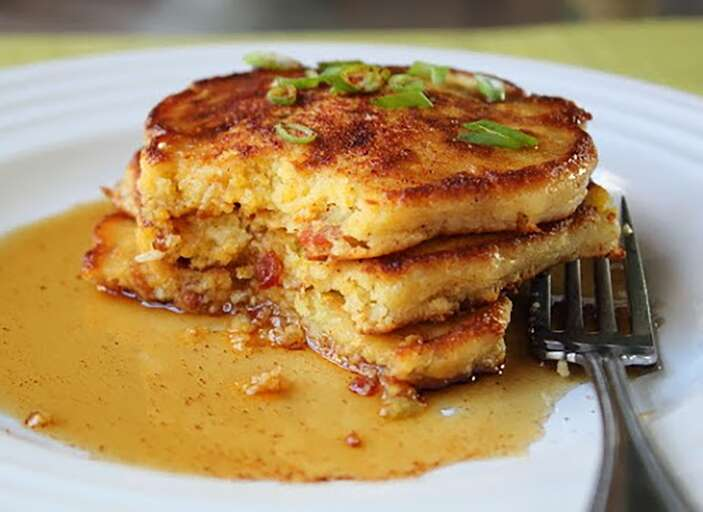

Pancake Recipes

Italian pizza is a type of pizza that originated in Italy. It is made with a thin,
hand-tossed crust that is baked in a wood-fired oven. The pizza is typically topped
with tomato sauce, mozzarella cheese, and a variety of other ingredients,
such as mushrooms, onions, peppers, and olives.
Italian pizza is known for its simple, yet delicious flavors.
Ingredients
- 1 cup all-purpose flour
- 2 tablespoons sugar
- 2 teaspoons baking powder
- 1/2 teaspoon salt
- 1 cup milk
- 1 egg
- 1 tablespoon melted butter
Steps
For dough
- 1 cup warm water (105°F to 115°F)
- 2 1/4 teaspoons active dry yeast (1 standard packet)
- 2 tablespoons olive oil, plus more for brushing on the dough
- 1 teaspoon sugar
- 1 teaspoon salt
- 3 cups all-purpose flour, plus more for dusting
For souce
- 1 (28-ounce) can whole peeled tomatoes, crushed by hand or in a food processor
- 1/2 cup chopped onion
- 3 cloves garlic, minced
- 1/2 teaspoon dried oregano
- 1/4 teaspoon sal
- 1/4 teaspoon black pepper
For toppings
- Shredded mozzarella cheese
- Fresh basil leaves
- Other toppings of your choice, such as pepperoni, sausage, mushrooms, onions, peppers, etc.
Back to Recipes